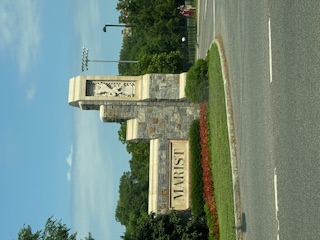
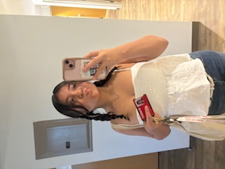

Education

Quinn is an early high school graduate, completing her studies in three years. She is on track to graduate with a regents diploma and a CTE endorsement in Web Development. She has earned a place on the Principal's Honor Roll every semester since arriving at the High School of Fashion Industries.
She has also studied at Marist University, where she earned a Pre-Law certificate by completing the course with an A.
She is able to think creatively and adaptively due to her background in the arts. She has practiced various art forms, including theater and acting, gymnastics, dance, illustration, and costume making. She also has a deep-rooted passion for being in the kitchen, enjoying all aspects of cooking and baking because of the experimental nature of it. Her favorite thing to bake is brownies, and her favorite thing to cook is pasta.

Languages
She speaks Spanish and English fluently, but she has taken French, Japanese, and Mandarin lessons in the past.
Extracurriculars
- Previous member of the Stunts team (2022-2023)
- Previous member of the Debate team (2023-2024)
- Member of the creative writing club (2023-2025)
- Member of the Wrestling team (2024-2025)
Stunts
While on the varsity team, she served as a base. Though this position didn't last long due to the toxic environment, long hours, and time constraints, she learned invaluable lessons from the sport. During her time in stunts, she mastered the cartwheel, a skill that required both physical strength and mental discipline. She also learned how to pick herself up from failure, understanding that setbacks were part of growth, not defeat. The most significant takeaway, however, was how to work as a team—trusting her teammates, communicating effectively, and realizing that collective effort could achieve remarkable things. Despite the challenges, the experience shaped her resilience and ability to push through adversity, lessons that have stayed with her in all areas of life.
Debate
The Debate team at HSFI didn’t last long due to the budget cuts enforced by Mayor Eric Adams. When she joined, she was excited to engage in intellectual discussions and develop her public speaking skills, but unfortunately, she only attended a few meetings before the program was discontinued. Despite the limited time, she was assigned to prepare for a Lincoln-Douglas debate, an assignment that required her to craft a thoughtful, persuasive argument on a socially relevant issue. Although the debate team was disbanded the same year it was created, the experience still left an impact on her. She learned how to quickly analyze complex issues, structure her thoughts logically, and speak confidently under pressure. These skills, though not fully explored due to the team’s brief existence, were foundational and would prove valuable in future endeavors, teaching her the importance of adaptability and making the most out of any opportunity, no matter how short-lived.
Creative Writing
One of the longest-standing clubs at HSFI, she joined during her sophomore year, eager to immerse herself in a creative community. Through her involvement, she honed her artistic skills, dedicating herself to refining her craft. Her hard work paid off when she was awarded a Silver Key from the Scholastic Art and Writing Awards, a recognition that validated her growth and talent in the field. As her passion for the club deepened, she became an ambassador for the organization, taking on a leadership role that allowed her to share her enthusiasm with others. Her efforts were instrumental in persuading more students to join, creating a welcoming space for aspiring artists and writers to express themselves. Through this experience, she not only improved her own abilities but also developed a sense of responsibility and leadership, learning how to inspire others and build a stronger, more inclusive community.
Wrestling
Current member tbc....